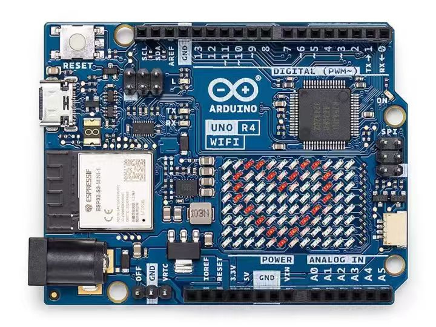
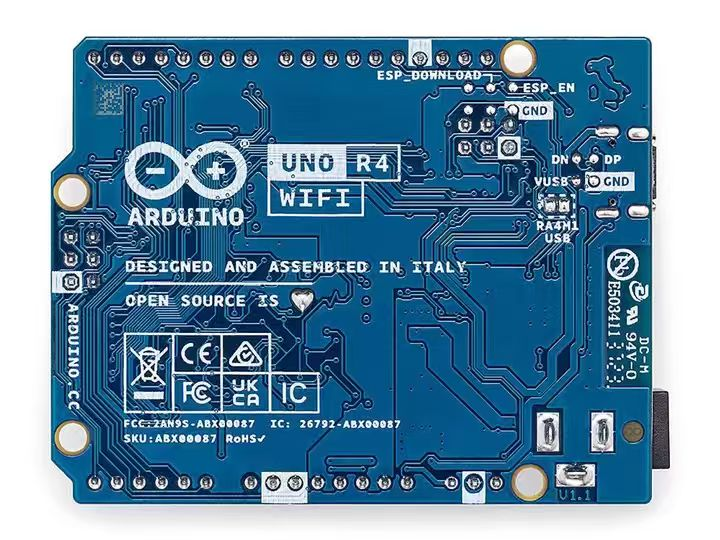
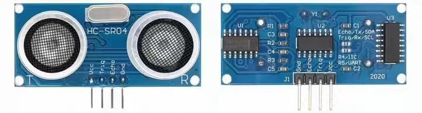
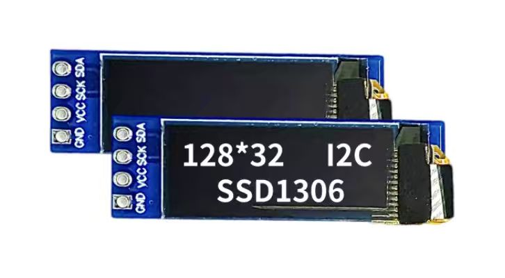
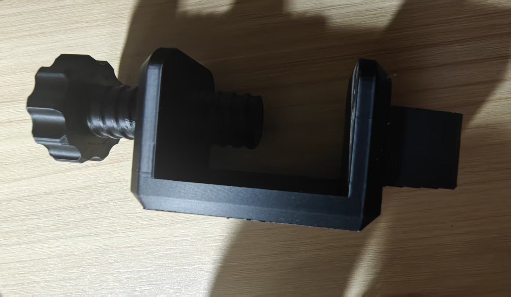
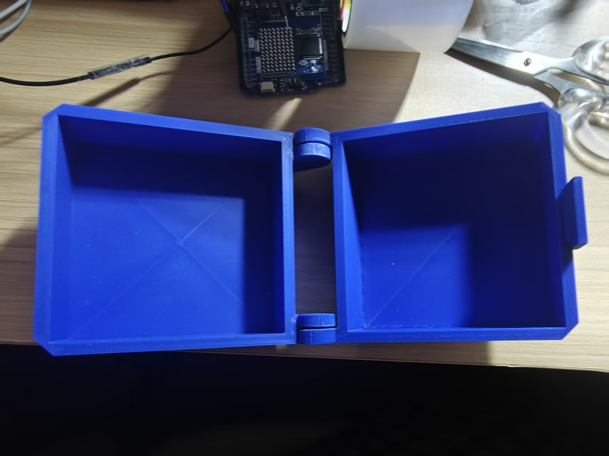
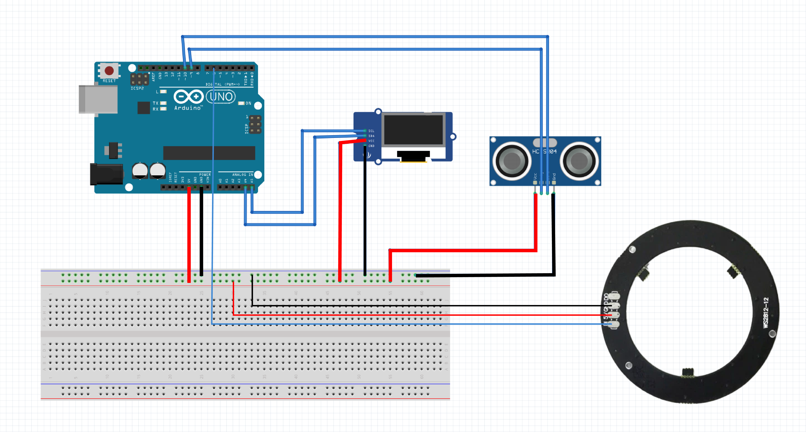

II
Project Poster
项目海报

图片 11-10
Mild Cognitive Impairment (MCI) Home Safety Assistance Device
项目演示视频
项目海报
图片 11-10
项目展板

图片 11-11
产品定位与解决的问题
Mild Cognitive Impairment (MCI) Home Safety Assistance Device (Cognitive Guardian)
Elderly people with mild cognitive impairment or early-stage Alzheimer's disease living at home, as well as their caregivers (family members or professional carers).
创新亮点
市场分析（同类产品、价格、渠道）
Recommended retail price: 300–500 CNY (~40–70 USD) as a lightweight assistive device, far below medical‑grade alternatives.
With mass production, BOM cost can be reduced to under 80 CNY, leaving healthy margins.
China has approximately 38 million elderly with MCI, and the ageing population continues to grow. Home safety needs are surging, and this product addresses a clear demand with strong differentiation – good market prospects.
关键技术分析与潜在技术问题
材料与制造方法

图片 11-1

图片 11-2

图片 11-3

图片 11-4

图片 11-5

图片 11-6

图片 11-7

图片 11-8
#include <Adafruit_NeoPixel.h>
// OLED屏幕库
#include <Wire.h>
#include <Adafruit_GFX.h>
#include <Adafruit_SSD1306.h>
// 超声波引脚定义
const int trigPin = 9;
const int echoPin = 10;
long echoTime;
int distance;
const int dangerDistance = 80; // 危险距离阈值(cm)
// WS2812灯环配置
#define LED_PIN 6
#define LED_NUM 12 // 根据你灯环实际灯珠数量修改
Adafruit_NeoPixel ring(LED_NUM, LED_PIN, NEO_GRB + NEO_KHZ800);
// -------------------------- OLED新增配置 --------------------------
#define SCREEN_W 128
#define SCREEN_H 32
Adafruit_SSD1306 display(SCREEN_W, SCREEN_H, &Wire, -1);
// OLED屏幕I2C地址，绝大多数模块是0x3C，少数0x3D
#define OLED_ADDR 0x3C
// -----------------------------------------------------------------
void setup() {
// 超声波初始化
pinMode(trigPin, OUTPUT);
pinMode(echoPin, INPUT);
Serial.begin(9600);
// 灯环初始化
ring.begin();
ring.clear();
ring.show();
// -------------------------- OLED初始化 --------------------------
if (!display.begin(SSD1306_SWITCHCAPVCC, OLED_ADDR)) {
Serial.println(F("OLED屏幕初始化失败！检查接线或地址"));
for (;;); // 卡死程序，代表屏幕没连上
}
display.clearDisplay();
display.setTextSize(1);
display.setTextColor(WHITE);
display.setCursor(0, 0);
display.println("Distance Detect");
display.println("System Ready");
display.display();
delay(1000);
// ----------------------------------------------------------------
}
void loop() {
// 超声波测距
digitalWrite(trigPin, LOW);
delayMicroseconds(2);
digitalWrite(trigPin, HIGH);
delayMicroseconds(10);
digitalWrite(trigPin, LOW);
echoTime = pulseIn(echoPin, HIGH);
distance = echoTime * 0.034 / 2;
Serial.print("当前距离：");
Serial.print(distance);
Serial.println(" cm");
// -------------------------- OLED刷新显示 --------------------------
display.clearDisplay();
display.setTextSize(2);
display.setCursor(0, 0);
display.print(" ");
if (distance < dangerDistance) {
display.println("WARNING!!");
} else {
display.println("SAFE AREA");
}
display.display();
// -----------------------------------------------------------------
// 判断是否进入危险区域
if (distance < dangerDistance) {
colorRotate(); // 彩色快速旋转警示
} else {
ring.clear(); // 安全状态，灯环熄灭
ring.show();
}
delay(80);
}
// 彩色循环旋转效果函数
void colorRotate() {
uint32_t color;
// 遍历每一颗灯珠，依次偏移色彩实现旋转
for (int i = 0; i < LED_NUM; i++) {
ring.clear();
// 循环彩虹色
color = ring.ColorHSV((i * 65536L / LED_NUM), 255, 255);
ring.setPixelColor(i, color);
ring.setPixelColor((i + 1) % LED_NUM, ring.ColorHSV(((i + 1) * 65536L / LED_NUM), 255, 180));
ring.show();
delay(30); // 数值越小旋转越快
}
}与联合国可持续发展目标的契合
This project directly and indirectly contributes to the following United Nations SDGs: